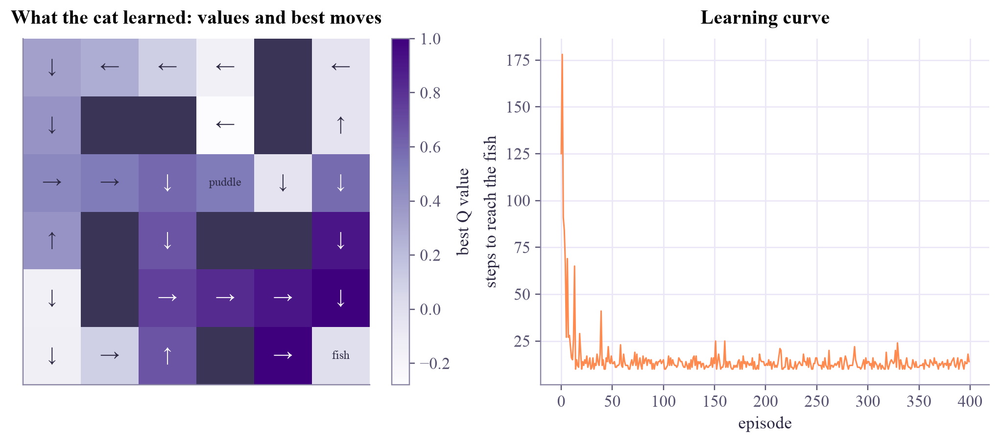
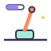

S...#. .##.#. ...P.. .#.##. .#.... ...#.F
Machine Learning
 about 12 min
about 12 min ml-w7d4.ipynb
ml-w7d4.ipynb
Q-learning in a maze
No rulebook this time: the cat learns the value of every move from its own experience, one nudge at a time.
In this lesson you will
- Explain the Q-learning update as a Bellman update from one sampled move
- Watch values spread back from the goal while the agent explores
- Compare learning (Q-learning) with planning (value iteration), and tune α, γ and ε
Warm-up
1 minA cat, a maze, a fish

Yesterday, value iteration found the cat's best moves by reading the rulebook: every transition probability, every reward. Real agents rarely get a rulebook. A robot doesn't know the physics of its own wheels exactly; a game-playing agent only sees what happens when it plays. Today the cat learns from experience alone.
Big idea
5 minValues that flow backwards from the goal
Same cat world as all week. The agent keeps a table : its current guess of how much discounted reward it can expect after taking action in state and playing well afterwards. Yesterday's Bellman update averaged over all possible next squares, using the rules. Q-learning uses the one move that actually happened: after going from to with reward , it nudges its guess towards that sample:
This is Q-learning, a temporal-difference method: each guess is corrected by the next one. The learning rate sets how big each nudge is; averaged over many moves, the nudges follow the Bellman equation, so ends up at the same values value iteration computes. At first only the square next to the fish learns anything; then its neighbor learns from it, and so on: value flows backwards from the goal. The policy is "take the action with the largest ", and during training we still explore with ε-greedy, just like Tuesday's bandit.
Value iteration (planning)
If you know the maze's rules, sweep the same update over every square repeatedly. This is dynamic programming: no exploring needed.
Q-learning (learning)
If you don't know the rules, learn them by walking around. Slower, but it only needs experience.
Q-learning is the Bellman equation learned from samples: nudge each guess towards "reward now plus the discounted best guess of where I landed".
Play
5 minTrain the cat
Press Train and watch the cat explore. The color of each square is its best value; arrows show the current policy. Then try Plan instead to see value iteration sweep the same values in at once.
Try this
Reset, set and train again. The cat becomes short-sighted: far-away squares barely feel the fish and the arrows near the start look confused. Then try ε = 0: without exploration the cat can get stuck running into walls for a long time.
Code
2 minQ-learning in NumPy
The notebook for this lessonEvery code cell below, with what it printed, is in
ml-w7d4.ipynb. To change the code and run it yourself, open the notebook in Google Colab (free, in your browser) or download it for your own Jupyter.import numpy as np
import matplotlib.pyplot as plt
maze = [
"S...#.",
".##.#.",
"...P..",
".#.##.",
".#....",
"...#.F",
]
rows, cols = len(maze), len(maze[0])
moves = {0: (-1, 0), 1: (0, 1), 2: (1, 0), 3: (0, -1)} # up, right, down, left
arrows = "↑→↓←"
def step(state, action):
r, c = state
dr, dc = moves[action]
nr, nc = r + dr, c + dc
if not (0 <= nr < rows and 0 <= nc < cols) or maze[nr][nc] == "#":
nr, nc = r, c # bumped into a wall: stay put
cell = maze[nr][nc]
if cell == "F":
return (nr, nc), 1.0, True # the fish: big reward, episode ends
if cell == "P":
return (nr, nc), -1.0, False # a puddle: ouch
return (nr, nc), -0.04, False # every step costs a little
print("\n".join(maze))What it printed in the notebook
def q_learning(episodes=400, alpha=0.5, gamma=0.95, epsilon=0.2, seed=0):
rng = np.random.default_rng(seed)
Q = np.zeros((rows, cols, 4))
lengths = []
for episode in range(episodes):
state, done, n = (0, 0), False, 0
while not done and n < 200:
if rng.random() < epsilon:
action = int(rng.integers(4)) # explore
else:
action = int(np.argmax(Q[state])) # exploit
new_state, reward, done = step(state, action)
target = reward + (0 if done else gamma * Q[new_state].max())
Q[state][action] += alpha * (target - Q[state][action])
state, n = new_state, n + 1
lengths.append(n)
return Q, lengths
Q, lengths = q_learning()
print("steps in the first 5 episodes:", lengths[:5])
print("steps in the last 5 episodes :", lengths[-5:])What it printed in the notebook
steps in the first 5 episodes: [125, 178, 91, 84, 66] steps in the last 5 episodes : [14, 13, 13, 18, 14]
fig, (left, right) = plt.subplots(1, 2, figsize=(10, 4), layout="constrained")
values = Q.max(axis=2)
for r in range(rows):
for c in range(cols):
if maze[r][c] == "#":
values[r, c] = np.nan
cmap = plt.get_cmap("Purples").copy()
cmap.set_bad("#3a3456") # walls drawn dark
shown = left.imshow(np.ma.masked_invalid(values), cmap=cmap)
fig.colorbar(shown, ax=left, label="best Q value")
for r in range(rows):
for c in range(cols):
cell = maze[r][c]
text = {"#": "", "F": "fish", "P": "puddle"}.get(cell, arrows[int(np.argmax(Q[r, c]))])
color = "white" if np.nan_to_num(values[r, c]) > 0.55 else "#2c2842"
left.text(c, r, text, ha="center", va="center", fontsize=13 if len(text) == 1 else 8, color=color)
left.set_xticks([])
left.set_yticks([])
left.grid(False)
left.set_title("What the cat learned: values and best moves")
right.plot(lengths, color="#ff8a50", lw=1)
right.set_xlabel("episode")
right.set_ylabel("steps to reach the fish")
right.set_title("Learning curve")
plt.show()What it printed in the notebook

V = np.zeros((rows, cols))
for sweep in range(60):
new_V = V.copy()
for r in range(rows):
for c in range(cols):
if maze[r][c] in "#F":
continue
outcomes = []
for a in range(4):
(nr, nc), reward, done = step((r, c), a)
outcomes.append(reward + (0 if done else 0.95 * V[nr, nc]))
new_V[r, c] = max(outcomes)
V = new_V
print("value of the start square, value iteration:", round(V[0, 0], 3))
print("value of the start square, Q-learning :", round(Q[0, 0].max(), 3))What it printed in the notebook
value of the start square, value iteration: 0.334 value of the start square, Q-learning : 0.334
Learning by experience and planning with the rules agree on the value of the start square.
Your turn
2 minYour turn: explore less as you learn more
A fixed ε keeps taking random steps even after the cat knows the way. Make ε start at 1 and shrink every episode, and compare the episode lengths at the end of training.
def q_learning_decay(episodes=400, alpha=0.5, gamma=0.95, seed=0):
rng = np.random.default_rng(seed)
Q = np.zeros((rows, cols, 4))
lengths = []
for episode in range(episodes):
epsilon = 0.2 # TODO: max(0.01, 0.99 ** episode)
state, done, n = (0, 0), False, 0
while not done and n < 200:
action = int(rng.integers(4)) if rng.random() < epsilon else int(np.argmax(Q[state]))
new_state, reward, done = step(state, action)
target = reward + (0 if done else gamma * Q[new_state].max())
Q[state][action] += alpha * (target - Q[state][action])
state, n = new_state, n + 1
lengths.append(n)
return Q, lengths
print("fixed epsilon :", np.mean(q_learning()[1][-50:]))
print("decaying epsilon:", np.mean(q_learning_decay()[1][-50:]))Need a hint?
Only one line changes: epsilon = max(0.01, 0.99 ** episode) at the start of each episode. After 300 episodes, .
Show a solution
def q_learning_decay(episodes=400, alpha=0.5, gamma=0.95, seed=0):
rng = np.random.default_rng(seed)
Q = np.zeros((rows, cols, 4))
lengths = []
for episode in range(episodes):
epsilon = max(0.01, 0.99 ** episode) # explore a lot early, very little later
state, done, n = (0, 0), False, 0
while not done and n < 200:
action = int(rng.integers(4)) if rng.random() < epsilon else int(np.argmax(Q[state]))
new_state, reward, done = step(state, action)
target = reward + (0 if done else gamma * Q[new_state].max())
Q[state][action] += alpha * (target - Q[state][action])
state, n = new_state, n + 1
lengths.append(n)
return Q, lengths
for seed in range(3):
fixed, decay = q_learning(seed=seed)[1], q_learning_decay(seed=seed)[1]
print(f"seed {seed}: last 50 episodes, average steps: fixed epsilon {np.mean(fixed[-50:]):.1f}, "
f"decaying epsilon {np.mean(decay[-50:]):.1f}")
print("Exploring a lot at first and very little at the end gets close to the 10-step route.")What it printed in the notebook
seed 0: last 50 episodes, average steps: fixed epsilon 12.9, decaying epsilon 10.2 seed 1: last 50 episodes, average steps: fixed epsilon 12.7, decaying epsilon 10.2 seed 2: last 50 episodes, average steps: fixed epsilon 13.1, decaying epsilon 10.3 Exploring a lot at first and very little at the end gets close to the 10-step route.
Check yourself
1 minQuick check
Question 1 of 3
What does estimate?
Question 2 of 3
Early in training, which squares get useful values first?
Question 3 of 3
What does a small discount, say , make the agent do?
Wrap-up
1 minToday in one sentence
Quantum link
Swap the maze for a quantum experiment: states are what you've measured so far, actions are pulses or gates, and the reward is the fidelity of the final state. RL agents trained this way design control sequences and error-correction strategies. You can also replace the Q-table with a parameterised quantum circuit: that's quantum reinforcement learning.
Go deeper (optional)
Sutton and Barto, Reinforcement Learning: An Introduction, chapter 6 (temporal-difference learning), with Q-learning in section 6.5 and its cautious cousin SARSA in section 6.4. The original: Watkins and Dayan, "Q-learning" (Machine Learning, 1992).
Next in Machine Learning: the week 7 finale, policy gradients, where a neural network learns the moves directly.

That's the lesson!
Tap the button to save it. Short and steady wins.

Next in Machine LearningPolicy gradients with PyTorchMarked by mistake? Undo